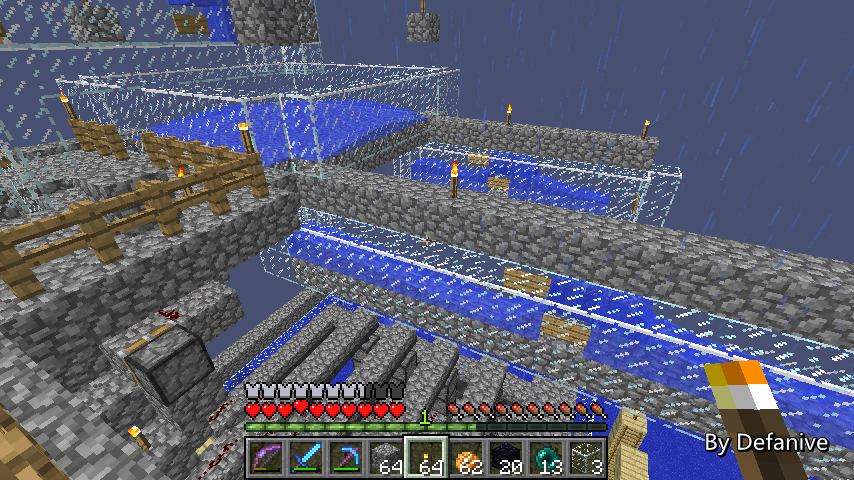
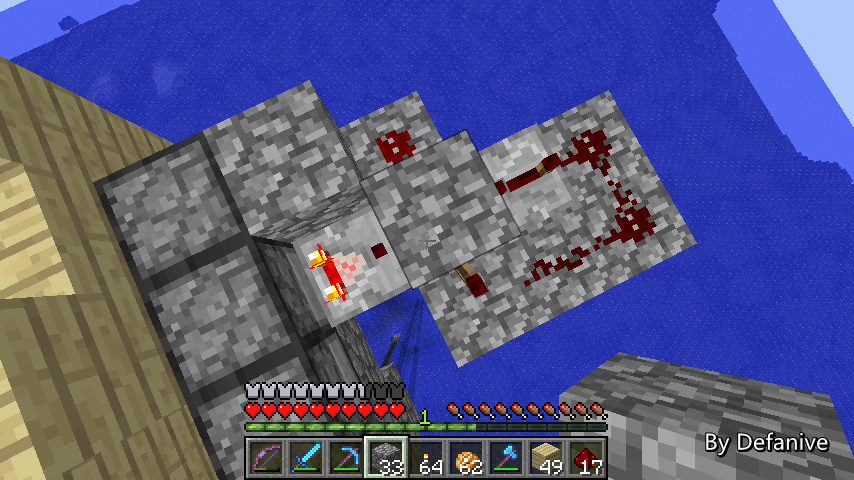

首页
上一页
273
274
275
276
277
278
278
279
280
281
282
283
下一页
末页
defanive2
无尽黑夜
14
电路主要进行的修改就是在主活塞的推动上
由于右侧有红石灯电路的火把
所以之前被迫使用中继器，而导致加大了延迟
现在把电路改成BUD驱动，并且用动力铁轨强制更新活塞
这里的改变也改了电路的很多其他部分
总之成效还是不错的
——来自 MCLive
23327楼
2013-10-06 11:34
defanive2
无尽黑夜
14
而刷怪塔这边的生存者模式也做了很多工作
现在来带大家参观一下主要的改变吧
——来自 MCLive
23328楼
2013-10-06 11:38
defanive2
无尽黑夜
14
随机怪物分配的4个出口也做好了水路
水路一直连接到下面训练室的4个刷怪口
——来自 MCLive

23329楼
2013-10-06 11:41
defanive2
无尽黑夜
14
下面可以看到刷怪口的水路
怪物被运到刷怪口之后进入训练室
同时也做好了光照系统
使用末影箱防爆，上面放上萤石
这样就可以做到提供亮度的效果
——来自 MCLive
23332楼
2013-10-06 11:44
defanive2
无尽黑夜
14
现在的训练室，还是相对有点暗
但是效果挺不错的了
——来自 MCLive
23335楼
2013-10-06 11:45
defanive2
无尽黑夜
14
可以看到天花板上的末影箱提供光照
——来自 MCLive
23336楼
2013-10-06 11:45
defanive2
无尽黑夜
14
出口这里有矿车的回收系统
按一下按钮之后漏斗矿车就会出去跑一圈
把所有场地里面的物品都收集回来，放入箱子里
玩家可以从箱子里面捡起自己死亡后掉落的物品
PS 木栅栏用于防止不小心掉下去
——来自 MCLive
23337楼
2013-10-06 11:47
defanive2
无尽黑夜
14
当然，从这里出去的通道以及下面的等待室还没造好
今天的任务就是把生存者模式的最后一部分给完成了
并且试运行一次
——来自 MCLive
23339楼
2013-10-06 11:49
defanive2
无尽黑夜
14
简单做好了通道和基本装潢
这里是入口的门
——来自 MCLive
23344楼
2013-10-06 11:58
defanive2
无尽黑夜
14
进去之后继续直走，往前就到了向下的楼梯
下去之后就进入到准备室
——来自 MCLive
23345楼
2013-10-06 11:59
defanive2
无尽黑夜
14
从楼梯下来之后就到了准备室
正前方的就是一些基本的设施
而右边就是训练室了
这样的话，在准备室里面怪物就无法看到我们
——来自 MCLive
23348楼
2013-10-06 12:00
defanive2
无尽黑夜
14
时间将会是评判玩家能力的指标
在训练室里面生存得越久越好
大致的思路是，按下按钮之后就表示玩家开始了训练
开始训练之后，会打开一个周期为1秒的脉冲
每次信号都会有一个物品从后面的发射器给到箱子里
玩家死亡之后，重生触发到绊线，关闭脉冲
然后箱子里面的物品数量就是玩家存活的秒数
——来自 MCLive
23350楼
2013-10-06 12:06
defanive2
无尽黑夜
14
电路非常的简单
图上方是发射物品到箱子的投掷器
下方2个投掷器面对面，作为T-flipflop
当按钮按下的时候，中间的发射器被激活
物品被发射到下面的发射器
因此比较器失去信号，脉冲开始运行
信号给到发射物品的投掷器，将物品扔到箱子里
——来自 MCLive

23354楼
2013-10-06 12:14
defanive2
无尽黑夜
14
简单测试之后一切运行正常
——来自 MCLive
23358楼
2013-10-06 12:18
defanive2
无尽黑夜
14
要用什么物品代表秒数呢？
其实我没有想到什么比较好的物品
暂时就用腐肉吧，家里有现成的
顺便可以代表满地的怪物残尸 = =
PS 9组物品可以计时到9.6分钟
个人感觉在高密度的怪物数量下这个时间应该够用了
——来自 MCLive
23362楼
2013-10-06 12:24
defanive2
无尽黑夜
14
至于装饰什么的以后再做吧
现在我们就来玩一次生存者模式吧！
——来自 MCLive
23363楼
2013-10-06 12:25
defanive2
无尽黑夜
14
这次是我的装备
新的LV30附魔的铁甲（保护IIIx2，爆炸保护IV，弹射物保护IV）
3把新的无附魔铁剑
1把力量IV+击退II的弓，1组箭
以及10个马铃薯
PS 这些物资应该在死亡前都够用了
——来自 MCLive
23366楼
2013-10-06 12:30
defanive2
无尽黑夜
14
之前已经睡过一觉了
接下来我们来进行一场生存者模式训练吧！
——来自 MCLive
23367楼
2013-10-06 12:31
defanive2
无尽黑夜
14
打开刷怪塔总开关之后
扔小黑眼进入训练场地
正式开始啦！
PS 已经在床睡过一觉了
PS PS 战斗的时候会截图
打完了再把图发上来
——来自 MCLive
23371楼
2013-10-06 12:38
defanive2
无尽黑夜
14
战前的寂静
怪物刚从刷怪塔出来之后还要经过运输系统
因此在开启之后有一段时间的冷却
——来自 MCLive
23375楼
2013-10-06 12:49
defanive2
无尽黑夜
14
第一批怪物下来，基本上都靠近战杀死
——来自 MCLive
23376楼
2013-10-06 12:50
defanive2
无尽黑夜
14
接下来怪物开始拥挤了
故意引爆苦力怕杀死一群附近的怪物
在苦力怕爆炸的时候右键格挡减少伤害
——来自 MCLive
23377楼
2013-10-06 12:51
defanive2
无尽黑夜
14
吃东西的时间是最难把握的
一旦饱食度不满的话，不回血是非常困难的
个人选择在故意引爆一个苦力怕之后吃东西
然后尽量躲避骷髅的远程攻击
——来自 MCLive
23379楼
2013-10-06 12:53
defanive2
无尽黑夜
14
一只拿铁剑的僵尸
——来自 MCLive
23380楼
2013-10-06 12:55
defanive2
无尽黑夜
14
非常暴力，血量开始逐渐减少了
——来自 MCLive
23381楼
2013-10-06 12:56
defanive2
无尽黑夜
14
最后在一心血的时候被骷髅狙击了
个人感觉这一局打得一般般
不过对于第一次来说应该不错了
——来自 MCLive
23383楼
2013-10-06 12:58
defanive2
无尽黑夜
14
重生之后，箱子里有208个物品
也就是存活了208秒，大约3分半钟
个人感觉玩得好的话应该可以坚持到5分钟左右
当然如果有更好的装备，估计就能坚持更久了
——来自 MCLive
23384楼
2013-10-06 12:59
defanive2
无尽黑夜
14
让矿车进去把东西都回收了之后
可以发现防具都坏得差不多了
还少了胸甲（不知道是被炸掉了还是已经坏掉了）
弓基本没用过。。
——来自 MCLive
23387楼
2013-10-06 13:06
defanive2
无尽黑夜
14
整个生存者模式运行非常正常！
而且非常具有挑战性，很想再玩一次
不过附魔的铁装都已经坏掉了
要再玩得话就得重新去附魔一套
个人感觉这个是生存里面造的最好玩的娱乐装置了
大家下次再见吧！
——来自 MCLive
23388楼
2013-10-06 13:11
defanive2
无尽黑夜
14
最近几天都在讨论地狱堡垒刷怪的事情
今天看完源码终于有结论了
在下面这个帖子里面详细讲了实现在基岩上方刷凋零骷髅的方法
http://tieba.baidu.com/p/2645948265
这个可以说是世界级的发现，第一次在生存中实现如此高效率
非常好顶赞！
23501楼
2013-10-12 16:53
首页
上一页
273
274
275
276
277
278
278
279
280
281
282
283
下一页
末页